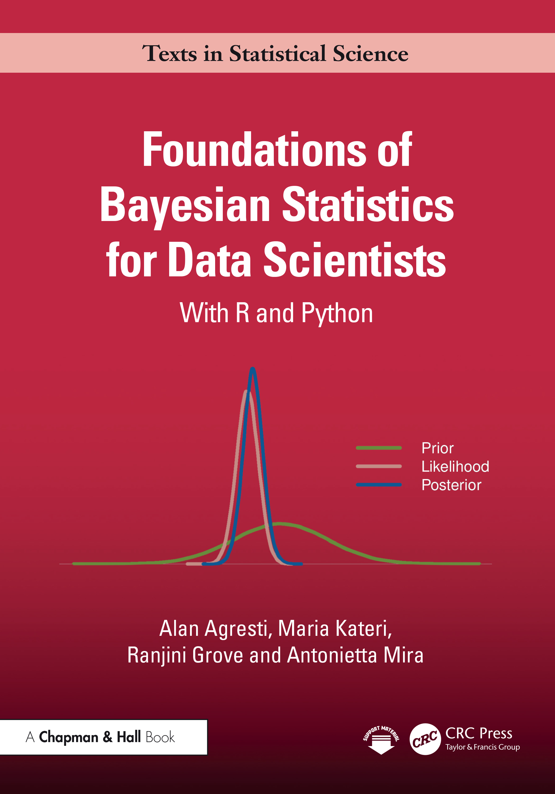
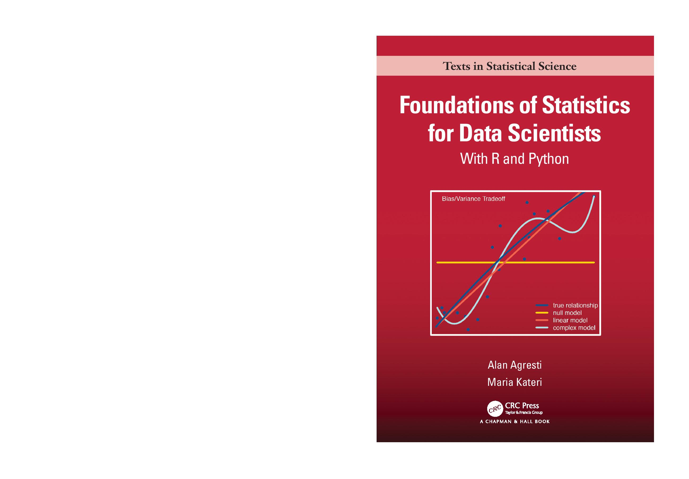
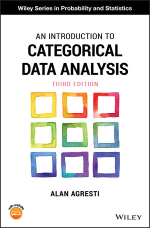
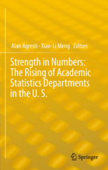
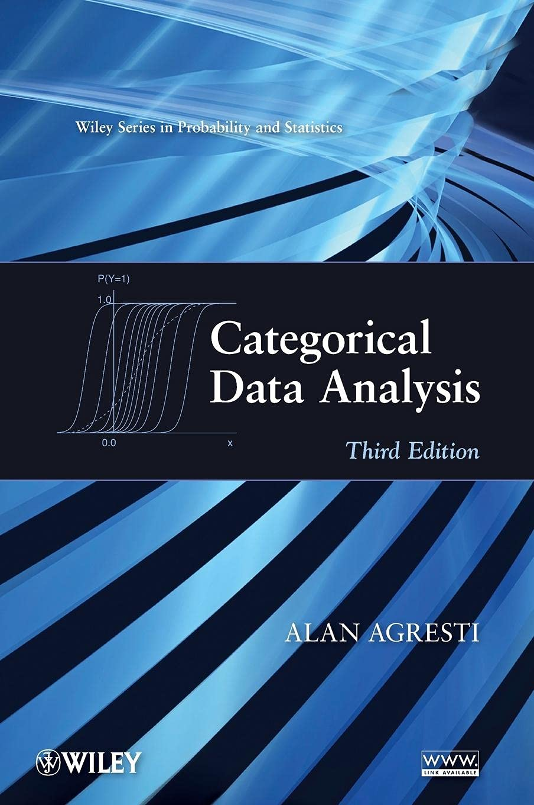
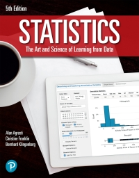
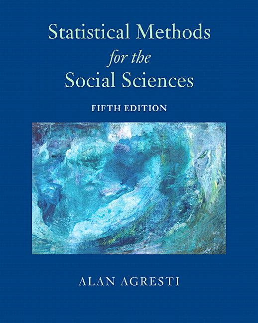
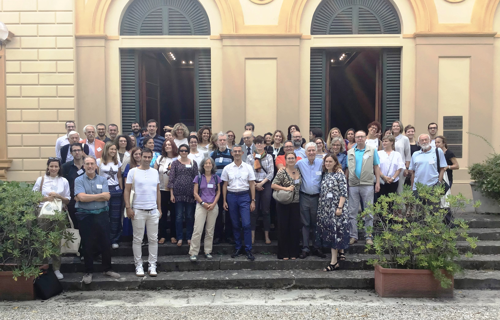

|
|
Alan Agresti
Distinguished Professor Emeritus, University of Florida
E-MAIL: agresti "at" ufl "dot" edu
|
I grew up in Syracuse, New York, and attended the University of Rochester
as an undergraduate and University of Wisconsin as a graduate student.
After receiving my PhD in 1972, with Stephen Stigler as my thesis advisor,
I took a position in the Statistics Department at the University of Florida.
I spent my career there, retiring as a distinguished professor in 2010.
However, I also had several visiting professor positions. These include
Harvard University (where I taught a course fall semester each year
2008-2014), Imperial College (London), the London School of
Economics, and shorter visiting positions at several universities
including Florence, Padova, and Univ. Cattolica (Italy), Hasselt
(Belgium), Paris VII, Boston University, and Oregon State. I have
taught short courses in about 35 countries, such as at various
universities each year since 1991 in Italy, where I became a citizen
in 2017 to supplement my American citizenship. Here is
my CV.
Honors
- Fellow, American Statistical Association, 1990
- Fellow, Institute of Mathematical Statistics, 2008
- Honorary doctorate, De Montfort University (Leicester, U.K.), 1999
- Statistician of the Year, Chicago chapter of American Statistical
Association, 2003
- Recipient of the first Herman Callaert Leadership Award in
Statistical Education and Dissemination, Hasselt University,
Diepenbeek, Belgium, 2004
- University of Florida Distinguished Professor, 2000-2010
-
Categorical Data Analysis & Friends workshop in my honor,
University of Firenze, Italy, 2019
- Keynote lectures at conferences include Swiss Statistical Society
(1992), French Biometric Society (1992), Conference on Statistical
Issues in Biopharmaceutical Environments (1999) in the UK, Army
Conference on Applied Statistics (2002), CDC annual awards meeting
(2003), Applied Statistics in Ireland (2004), Hawaii International
Conference on Statistics, Mathematics, and Related Fields (2004),
International Society of Clinical Biostatistics (2005) in Hungary,
CompStat (2006) in Italy, Applied Statistics (2007) in Slovenia, Royal
Statistical Society (2008) in UK, Colombian Statistics Symposium
(2012), Portuguese-Galician Biometry Meeting (2013), New England
Statistics Symposium (2014), Italian Statistical Society (2022),
Argentine Society of Statistics (2025), and invited lectures and short
courses in about 35 countries
Book Information and Supplemental Files
1. The textbook

Foundations of Bayesian Statistics, with R and Python
, written with Maria Kateri, Ranjini Grove, and Antonietta Mira,
will be published in June 2026 by
CRC Press
. This book provides an overview of the
Bayesian approach to applying the most important inferential methods
of statistical science. It is designed as a textbook for advanced
undergraduate and masters students in Data Science, Statistics, or
Mathematics who are interested in learning about Bayesian statistical
methods and R and Python software for implementing the methods.
2. The textbook

Foundations
of Statistics for Data Scientists, with R and Python , written
with Maria Kateri, has been published by
CRC
Press (copyright 2022). Designed as a textbook for an introduction
to mathematical statistics for students training to become data
scientists, the book provides an in-depth presentation of the topics
in statistical science with which any data scientist should be
familiar, including probability distributions, descriptive and
inferential statistical methods, and linear modelling. Compared to
traditional math stat textbooks, however, the book has less emphasis
on probability theory and more emphasis on using software to implement
statistical methods and to conduct simulations to illustrate key
concepts. All statistical analyses in the book use R software, with
an appendix showing the same analyses with Python. The book also
introduces modern topics that do not normally appear in mathematical
statistics texts but are highly relevant for data scientists, such as
Bayesian inference, generalized linear models for non-normal responses
(e.g., logistic regression and Poisson loglinear models), and
regularized model fitting. It contains nearly 500 exercises. The
book's website has
expanded R, Python, and Matlab appendices and all data sets from the
examples and exercises. Here is a
book
review by Nicholas Horton, in Journal of the American
Statistical Association. An Italian translation of the book by Fabio Corradi is also available, published by Egea at Bocconi University.
3. The
textbook

An Introduction to Categorical Data Analysis, (Wiley, 2019)
is in its 3rd edition. This new edition shows how
to do all analyses using R software and add some new material (e.g.,
Bayesian methods, classification and smoothing). This book, which
presents a nontechnical introduction to topics such as logistic
regression, is a lower-technical-level and shorter version of the
"Categorical Data Analysis" text mentioned above. I've constructed a
website for these texts that provides information about the use of
Software for
Categorical Data Analysis such as SAS, R and S-Plus, SPSS,
Stata, and StatXact. Data files from the text are
available at a
Github
site for CDA data files and at the
Wiley companion
website for Intro CDA. Here are
some corrections
for the 1st edition of this book, a pdf file
of corrections for the 2nd
edition, and a pdf file of
corrections for the 3rd edition. For those who use R, a
very useful and helpful R language compendium has been prepared by
Professor Raymond Balise. Containing code and formulas to accompany
this book, it can be found at
Balise
R compendium for Intro CDA. For examples of
the use of Stata and SAS for various analyses for examples, see
the useful site
at UCLA.
4. The textbook

Foundations
of Linear and Generalized Linear Models, published by Wiley in
2015, presents an overview of the most commonly used
statistical models by discussing the theory underlying the models and
showing examples using R software. The book begins with the
fundamentals of linear models, such as showing how least squares
projects the data onto a model vector subspace and orthogonal
decompositions of the data yield comparisons of models. The book then
covers the theory of generalized linear models, with chapters on
binomial and multinomial logistic regression for categorical data and
Poisson and negative binomial loglinear models for count data. The
book also introduces quasi-likelihood methods (such as generalized
estimating equations), linear mixed models and generalized linear
mixed models with random effects for clustered correlated data,
Bayesian linear and generalized linear modeling, and regularization
methods for high-dimensional data. The book has more than 400
exercises. The book's
website
contains supplementary information, including data sets and
corrections. Here is
an interview
about the book in the Wiley publication "Statistics Views." Here are
book reviews in Biometrics,
in Biometrical
Journal, and some reviews
at Amazon.
5. The
book

Strength in Numbers: The Rising of Academic Statistics Departments in
the U.S., co-edited with Xiao-Li Meng, has been published by
Springer (2012). This book has a chapter for each of about 40
Statistics and Biostatistics departments founded in the U.S. by the
mid-1960s, describing the evolution of those departments and the
faculty and students who worked in them. Included are about 200
historical photos. See
the Springer site for other details.
6.
The textbook

Categorical Data Analysis
is in its third edition (Wiley, 2013).
I've constructed
a Website for
Categorical Data Analysis that provides datasets used for
examples, solutions to some exercises, information about using R, SAS,
Stata, and SPSS software for conducting the analyses in the text, a
list of some typos and errors, and powerpoint slides. For users of R,
Prof. Charles Geyer has prepared
a CatDataAnalysis
package for CDA at CRAN, with data files used in text
examples and exercises. He also has a website with
notes on
CDA for the course he has taught at the University of
Minnesota on categorical data analysis, with one section dealing with
infinite
ML estimates in canonical link models.
Here is
an interview
that the Wiley publication "Statistics Views" conducted with me to
mark the publication of the new
edition.
Dr. Laura Thompson has prepared an excellent, detailed manual on the use of R or
S-Plus to conduct all the analyses in the 2nd edition:
Laura
Thompson R and S manual for CDA.
7. The
textbook 

Analysis of Ordinal Categorical Data (Wiley, 1984) has
been revised with the second edition published in 2010.
My ordinal categorical
website contains (1) data sets for some examples in the
form of SAS programs for conducting the analyses, (2) examples of the
use or R for fitting various ordinal models, (3) examples of the use
of Joe Lang's mph.fit R function for various analyses in the book that
are not easily conducted with SAS, Stata, SPSS, and standard functions
in R, and (4) corrections of errors in the book.
Here is the video for a half-day course I taught in 2020 for the
Harvard School of Public Health on
Modeling Ordinal Categorical Data.
8. The
textbook

>
Statistics:
The Art and Science of Learning from Data (5th edition,
Pearson, 2021) was written with Christine Franklin of the University
of Georgia and Bernhard Klingenberg of Williams College. Professor
Klingenberg has developed a wonderful set of applets and other
resources for teaching from the book
(see Art of Stat ).
This text is designed for a one-term or two-term undergraduate course
or a high school AP course on an introduction to statistics, presented
with a conceptual approach. Many supplemental materials are available
from Pearson, including an annotated instructor's edition, a lab
workbook, videotaped lectures, and software supplements. An
Italian
translation of the 3rd edition is available, thanks to
Giuseppe Espa, Rocco Micciolo, Diego Giuliani and Maria Michela
Dickson at the University of Trento.
9. The
book

Statistical Methods for the Social Sciences, (5th edition,
Pearson, 2018; 4th edition, by A. Agresti and B. Finlay, published
2009) is designed for a two-semester sequence. The book begins with
the basics of statistical description and inference, and the second
half concentrates on regression methods, including multiple
regression, ANOVA and repeated measures ANOVA, analysis of covariance,
logistic regression, and generalized linear models. The new edition
adds R and Stata for software examples as well as introductions to new
methodology such as multiple imputation for missing data, random
effects modeling including multilevel models, robust regression, and
the Bayesian approach to statistical inference. The book's
website contains
supplementary information, including data sets and corrections.
Special directories also have data files in Stata format and in SPSS
format. For applets used in some examples and exercises of the new
edition, go
to applets.
These were designed by Bernhard Klingenberg for the text "Statistics:
The Art and Science of Learning from Data" (4th and 5th ed.) by
Agresti, Franklin, and Klingenberg. An Italian version of the
book Metodi
Statistici di Base e Avanzati per le scienze sociali,
translated by Alessandra Petrucci and Mariano Porcu, has been
published by Pearson. Some years ago, Jeffrey Arnold of the U of
Washington kindly set up a R package at CRAN for R users to be able to
access the datasets used in the 4th edition of this text. See
R
data files. He has also put the data files at a GitHub
site,
data files at
GitHub. There is also a Portuguese version of the 4th
edition, "Metodos Estatisticos para as Ciencas Socias," and Chinese
and Spanish versions. Thanks to Margaret Ross Tolbert for the cover
art for the 5th edition. Margaret is an incredibly talented artist
who has helped draw attention to the beauty but environmental
degradation of the springs in north-central Florida (see
www.margaretrosstolbert.com). I have developed Powerpoint files for
lectures from Chapters 1-12 of this text that are available to
instructors using this text. (Chapters 1-7 of these have also been
translated into Spanish by Norma Leyva of Universidad Iberoamericana
in Mexico.) Please contact me for details. Finally, here is a link
to a workshop held by the Department of Sociology, Oxford University,
in 2012 that
discussed issues
in the teaching of quantitative methods to social science
students.
Short Courses
I have taught short courses on categorical data analysis topics for
many universities, professional organizations, conferences, and
companies. These range in length from half-day to a couple of weeks,
most commonly one or two days on topics such as "Modeling Ordinal
Categorical Responses," "Analyzing Clustered Categorical Data,"
"Introduction to Categorical Data Analysis," "Discrete Data Analysis,"
and "Generalized Linear Modeling."
History of Statistics at UF
Click
on UF Statistics to download the
chapter on the history of the University of Florida Statistics
Department, taken from the book Strength in Numbers: The Rising of
Academic Statistics Departments in the U.S. edited by Alan Agresti and
Xiao-Li Meng.
Research and Publications
(Details are in my CV.)
My primary research interests have been in categorical data analysis.
Books
Foundations of Bayesian Statistics for Data Scientists, with R and
Python, with Maria Kateri, Ranjini Grove, and Antonietta
Mira; CRC Press (to appear, 2026).
Foundations of Statistics for Data Scientists, with R and
Python, with Maria Kateri; CRC Press (2022).
Foundations of Linear and Generalized Linear Models,
Wiley (2015).
Strength in Numbers: The Rising of Academic Statistics
Departments in the U.S., co-edited with Xiao-Li Meng; Springer
(2012).
Statistics: The Art and Science of Learning from Data,
5th edition, with Chris Franklin and Bernhard Klingenberg; Pearson
(2021)
Analysis of Ordinal Categorical Data, 2nd ed., Wiley
(2010).
An Introduction to Categorical Data Analysis, 3rd ed., Wiley
(2019).
Categorical Data Analysis, 3rd edition, Wiley
(2013).
Statistical Methods for the Social Sciences, 5th
edition, Pearson (2018) (4th edition 2009 with B. Finlay).
Some Articles
Bounds on the extinction time distribution of a branching
process. Advances in Applied Probability, 6 (1974),
322-335.
pdf file
On the extinction times of varying and random environment
branching processes. Journal of Applied Probability, 12
(1975), 39-46. pdf file
The effect of category choice on some ordinal measures of
association. Journal of the American Statistical Association,
71 (1976), 49-55. pdf file
Some exact conditional tests of independence for r x c
cross-classification tables. (with D. Wackerly)
Psychometrika, 42 (1977), 111-125.
pdf file
Some considerations in measuring partial association for ordinal
categorical data. Journal of the American Statistical
Association, 72 (1977), 37-45. pdf file
A coefficient of multiple association based on ranks.
Communications in Statistics, A6 (1977), 1341-1359.
pdf file (poor copy)
Statistical analysis of qualitative variation. (with B.
Agresti), Chapter 10, in Sociological Methodology (1978) ed.
by K. F. Schuessler, Jossey-Bass Publ.,
204-237. pdf
file
Descriptive measures for rank comparisons of groups.
Proceedings of the Social Statistics Section of the American
Statistical Association, (1978), 585-590.
Exact conditional tests for cross-classifications: Approximation
of attained significance level. (with D. Wackerly and J. Boyett),
Psychometrika, 44 (1979), 75-83.
pdf file
Measuring association and modelling relationships between
interval and ordinal variables. (J. Schollenberger, A. Agresti,
and
D. Wackerly), Proceedings of the Social Statistics Section of
the American Statistical Association, (1979), 624-626.
pdf file
Generalized odds ratios for ordinal data. Biometrics, 36
(1980), 59-67.
pdf file
A hierarchical system of interaction measures for
multidimensional contingency tables. Journal of the Royal
Statistical Society B, 43 (1981),
293-301. pdf file
Measures of nominal-ordinal association, Journal of the
American Statistical Association, 76 (1981), 524-529.
pdf file
Statistical fallacies. Encyclopedia of the Statistical
Sciences, Vol. 3 (1983), John Wiley and Sons, 24-28.
pdf file
Testing marginal homogeneity for ordinal categorical variables,
Biometrics, 39, (1983), 505-510.
pdf file
A survey of strategies for modelling cross-classifications
having ordinal variables. Invited Essay Review in Journal of the
American Statistical Association, 78 (1983),
184-198. pdf
file
Association models for multidimensional cross-classifications
of ordinal variables (with A. Kezouh), invited paper for issue on
categorical data, Communications in Statistics, A12 (1983),
1261-1276. pdf
file of abstract
A simple diagonals-parameter symmetry and quasisymmetry model,
Statistics and Probability Letters, 1 (1983), 313-316.
pdf file
The measurement of classification agreement: An adjustment to
the Rand statistic for chance agreement (with L. Morey),
Educational and Psychological Measurement, 44 (1984), 33-37.
pdf file
Ordinal data. Encyclopedia of the Statistical Sciences,
Vol. 6 (1985), John Wiley and Sons, 511-516.
pdf file
Comparing mean ranks for repeated measures data (with J.
Pendergast), Communications in Statistics, A15 (1986),
1417-1433. pdf
file
A new model for ordinal pain data from a pharmaceutical study
(with C. Chuang), Statistics in Medicine, 5 (1986), 15-20.
pdf
file
Applying R-squared type measures to ordered categorical
data, Technometrics, 28 (1986),
133-138. pdf
file
Models for the probability of concordance in
cross-classification tables (with J. Schollenberger and D.
Wackerly), Quality and Quantity (International Journal of
Methodology), 21 (1987), 49-57.
pdf file
Order-restricted score parameters in association models for
contingency tables (with C. Chuang and A. Kezouh), Journal of
the American Statistical Association, 82 (1987),
619-623. pdf
file
Bayesian and maximum likelihood approaches to order-restricted
inference for models for ordinal categorical data (with C. Chuang),
pp. 6-27 in Advances in Order Restricted Statistical
Inference, (1986), ed. by R. Dykstra, T. Robertson, and F.T.
Wright, New York:
Springer-Verlag. pdf
file of abstract
An empirical investigation of some effects of sparseness in
contingency tables (with M. Yang), Computational Statistics &
Data Analysis, 5 (1987), 9-21. pdf
file
A model for agreement between ratings on an ordinal scale,
Biometrics, 44 (1988), 539-548. pdf
file
Logit models for repeated ordered categorical response data,
invited paper for Proceedings of 13th SAS Users Group
Conference, (1988),
997-1005. pdf
file
An agreement model with Kappa as parameter, Statistics and
Probability Letters, 7 (1989),
271-273. pdf
file
Model-based Bayesian methods for estimating cell proportions in
cross-classification tables having ordered categories (with C.
Chuang), Computational Statistics \& Data Analysis, 7 (1989),
245-258. pdf
file
A tutorial on modeling ordered categorical response data,
Psychological Bulletin, 105 (1989),
290-301. pdf
file
A survey of models for repeated ordered categorical response
data, Statistics in Medicine, 8 (1989), 1209-1224.
pdf file
Exact inference for contingency tables with ordered categories
(with C. Mehta and N. Patel), Journal of the American Statistical
Association, 85 (1990),
453-458. pdf
file
Analysis of sparse repeated categorical measurement data (with
S. Lipsitz and J. B. Lang), SAS Users Group International
Conference Proceedings, 1991,
1452-1460. pdf
file
Parsimonious latent class models for ordinal variables, invited
paper in Proceedings of 6th International Workshop on
Statistical Modeling, (1991), 1-12, Utrecht, Netherlands.
Analysis of ordinal paired comparison data, Journal of the
Royal Statistical Society C (Applied Statistics), 41 (1992),
287-297. pdf
file
Loglinear modeling of pairwise interobserver agreement on a
categorical scale (M. P. Becker and A. Agresti), Statistics in
Medicine, 11 (1992),
101-114. pdf
file
Comparing marginal distributions of large, sparse contingency
tables (with S. Lipsitz and J. B. Lang), Computational
Statistics and Data Analysis, 14 (1992),
55-73. pdf
file
A survey of exact inference for contingency tables (with
discussion), Statistical Science, 7 (1992), 131-177.
pdf
file
Quasi-symmetric latent class models, with application to rater
agreement (with J. Lang), Biometrics, 49 (1993),
131-140. pdf
file
Modeling patterns of agreement and disagreement,
Statistical Methods in Medical Research, 1 (1992),
201-218. pdf
file of submitted paper
Computing conditional maximum likelihood estimates for
generalized Rasch models using simple loglinear models with
diagonals parameters, Scandinavian Journal of Statistics, 20
(1993), 63-72. pdf
file
Some empirical comparisons of exact, modified exact, and
higher-order asymptotic tests of independence for ordered
categorical variables (with J. Lang and C. Mehta),
Communications in Statistics, Simulation and Computation, 22
(1993),
1-18. pdf
file of abstract
A proportional odds model with subject-specific effects for
repeated ordered categorical responses (with J. Lang),
Biometrika, 80 (1993),
527-534. pdf
file
Distribution-free fitting of logit models with random effects
for repeated categorical responses, Statistics in Medicine, 12
(1993), 1969-1987. pdf
file of submitted paper
Simultaneously modeling joint and marginal distributions of
multivariate categorical responses (J. Lang and A. Agresti),
Journal of the American Statistical Association, 89 (1994),
625-632. pdf
file
Simple capture-recapture models permitting unequal catchability
and variable sampling effort, Biometrics, 50, (1994),
494-500. pdf
file
Logit models and related quasi-symmetric loglinear models for
comparing responses to similar items in a survey, Sociological
Methods and Research, 24 (1995), 68-95.
pdf file
Improved exact inference about conditional association in
three-way contingency tables (D. Kim and A. Agresti), Journal of
the American Statistical Association, 90 (1995),
632-639. pdf
file
Raking kappa: Describing potential impact of marginal
distributions on measures of agreement (with A. Ghosh and M.
Bini),
Biometrical Journal, 37 (1995)
811-820. pdf file
Order-restricted tests for stratified comparisons of binomial
proportions (with B. A. Coull), Biometrics, 52 (1996)
1103-1111. pdf
file
Mantel--Haenszel--type inference for cumulative odds ratios
(I-M. Liu and A. Agresti), Biometrics, 52 (1996)
1223-1h234. pdf file
Logit models with random effects and quasi-symmetric loglinear
models, pp. 3-12 in Statistical Modelling, Proceedings of the
11th International Workshop on Statistical Modelling (Orvieto,
Italy, July 1996).pdf
file
Connections between loglinear models and generalized Rasch
models for ordinal responses, Chapter 20 in Applications of
Latent Trait and Latent Class Models in the Social Sciences, pp.
209-218, edited by J. Rost and R. Langeheine, Berlin: Waxmann
Munster, (1997). pdf
file
Nearly exact tests of conditional independence and marginal
homogeneity for sparse contingency tables (D. Kim and A. Agresti),
Computational Statistics and Data Analysis, (1997), 24,
89-104. pdf
file
A review of tests for detecting a monotone dose-response
relationship with ordinal response data (with C. Chuang-Stein),
Statistics in Medicine, (1997), 16, 2599-2618.
pdf
file
A model for repeated measurements of a multivariate binary response,
Journal of the American Statistical Association (1997), 92,
315-321. pdf
file
Evaluating agreement and disagreement among movie reviewers,
Chance (1997) (with
L. Winner). pdf
file
An empirical comparison of inference using order-restricted
and linear logit models for a binary response (with
B. Coull), Communications in Statistics, Simulation and
Computation, (1998), 27, 147-166.
pdf
file
Comment on article by Strawderman and Wells,
Journal of the American Statistical Association, (1998), 93,
1307-1310. pdf file
Approximate is better than exact for interval estimation of
binomial proportions, The American Statistician
(1998) (with B. Coull). pdf
file
Order-restricted inference for monotone trend alternatives in
contingency tables Computational Statistics & Data Analysis
(1998) (with B. Coull). pdf
file
On logit confidence intervals for the odds ratio with small samples,
Biometrics (1999). pdf
file
The use of mixed logit models to reflect subject heterogeneity in
capture-recapture studies, Biometrics (1999) (B. Coull and
A. Agresti). pdf
file
Modeling a categorical variable allowing arbitrarily many
category choices, Biometrics (1999) (with
I. Liu). pdf
file
Modelling ordered categorical data: Recent advances and future
challenges, Statistics in Medicine
(1999). pdf
file
Random effects modeling of multiple binary responses using the
multivariate binomial logit-normal distribution, Biometrics
(2000) (B. A. Coull and
A. Agresti). pdf
file
Strategies for comparing treatments on a binary response with
smulti-center data, Statistics in Medicine (2000) (with
J. Hartzel). pdf
file
Hierarchical Bayesian analysis of binary matched pairs data,
Statistica Sinica (2000) (M. Ghosh, M. Chen, A. Ghosh, and
A. Agresti). pdf file
Noninformative priors for one parameter item response models,
Journal of Statistical Planning and Inference (2000) (M. Ghosh,
M. Chen, A. Ghosh, and A. Agresti).pdf
file
Challenges for categorical data analysis in the twenty-first
century, pages 1--19 in Statistics for the 21st Century, edited
by C. R. Rao and G. J. Szekely, Marcel Dekker
(2000). pdf
file
Summarizing the predictive power of a generalized linear
model, Statistics in Medicine (2000) (B. Zheng and A. Agresti)
pdf
file
Simple and effective confidence intervals for proportions and
difference of proportions result from adding two successes and two
failures, The American Statistician (2000) (with B. Caffo).
pdf file
Random effects modeling of categorical response data,
Sociological Methodology (2000) (A. Agresti, J. Booth,
J. P. Hobert, and
B. Caffo). pdf
file
Describing heterogeneous effects in stratified ordinal contingency
tables, with application to multi-center clinical trials,
Computational Statistics & Data Analysis (2001) (J. Hartzel,
I. Liu, and
A. Agresti). pdf
file
Strategies for modeling a categorical variable allowing
multiple category choices, Sociological Methods and Research
(2001) (A. Agresti and I. Liu). pdf
file
Exact inference for categorical data: recent advances and
continuing controversies, Statistics in Medicine (2001).
pdf file
A correlated probit model for multivariate repeated measures
of mixtures of binary and continuous responses, Journal of American
Statistical Association (2001) (R.V. Gueorguieva
and A. Agresti).
pdf file
On small-sample confidence intervals for parameters in
discrete distributions, Biometrics (2001) (A. Agresti and
Y. Min). pdf file
Multinomial logit random effects models, Statistical
Modelling (2001) (J. Hartzel, A. Agresti, and
B. Caffo). pdf
file
Modeling clustered ordered categorical data: A survey,
International Statistical Review (2001) (A. Agresti and
R. Natarajan).
pdf file
Statistical issues in the 2000 U.S. Presidential election in
Florida, University of Florida Journal of Law and Public Policy (Fall 2001 issue)
(A. Agresti and B. Presnell).
pdf file
Comment (with B. Coull) on article by Brown, Cai, and
DasGupta. Statistical Science, (2001), 16, 117-120.
pdf file
The analysis of contingency tables under inequality constraints,
Journal of Statistical Planning and Inference (2002)
(A. Agresti and
B. A. Coull). pdf
file
Measures of relative model fit, Computational Statistics and
Data Analysis (2002) (A. Agresti and
B. Caffo). pdf
file
Unconditional small-sample confidence intervals for the odds
ratio, Biostatistics (2002) (A. Agresti and
Y. Min). pdf
file
Modeling nonnegative data with clumping at zero: A survey,
Journal of the Iranian Statistical Society (2002) (Y. Min
and A. Agresti). pdf file
Links between binary and multi-category logit item response
models and quasi-symmetric loglinear models, for special issue of
Annales de la Faculte des Sciences de Toulouse Mathematiques,
to honor retirement of Henri Caussinus, (2002).
pdf
file
On sample size guidelines for teaching inference about the
binomial parameter in introductory statistics, unpublished
manuscript by A. Agresti and Y. Min
(2002). pdf
file
The 2000 Presidential election in Florida: Misvotes,
undervotes, overvotes, Statistical Science (2002) (A. Agresti
and
B. Presnell). pdf
file
Dealing with discreteness: Making `exact' confidence intervals
for proportions, differences of proportions, and odds ratios more
exact, Statistical Methods in Medical Research (2003).
pdf
file
A class of generalized log-linear models with random effects,
Statistical Modelling (2003) (B. A. Coull and
A. Agresti). pdf
file
Interview
with Alan Agresti, conducted by Jackie Dietz,
STATS (The Magazine for Students of Statistics)
(2004).
Examples in which misspecification of a random effects
distribution reduces efficiency, Computational Statistics &
Data Analysis (2004) (A. Agresti, P. Ohman, and
B. Caffo). pdf
file
Effects and non-effects of paired identical observations in
comparing proportions with binary matched-pairs data, Statistics
in Medicine (2004) (A. Agresti and
Y. Min). pdf
file
Improved confidence intervals for comparing matched
proportions, Statistics in Medicine (2005) (A. Agresti and
Y. Min). pdf
file
Frequentist performance of Bayesian confidence intervals for
comparing proportions in 2x2 contingency tables, Biometrics
(2005) (A. Agresti and Y. Min). pdf file
Random effect models for repeated measures of zero-inflated
count data, Statistical Modelling (2005) (Y. Min and
A. Agresti). pdf
file
The analysis of ordered categorical data: An overview and a
survey of recent developments, invited discussion paper for the
Spanish Statistical Journal, TEST (2005) (I. Liu and
A. Agresti). pdf
file
Multivariate tests comparing binomial probabilities, with
application to safety studies for drugs,
Applied Statistics (JRSS-C) (2005) (A. Agresti and
B. Klingenberg). pdf
file
Bayesian inference for categorical data analysis,
Statistical Methods and Application (Journal of the Italian
Statistical Society), (2005) (A. Agresti and
D. Hitchcock). pdf
file
Randomized confidence intervals and the mid-P approach,
discussion of article by C. Geyer and G. Meeden, Statistical
Science, (2005) (A. Agresti and
A. Gottard). pdf
file
Multivariate extensions of McNemar's test, Biometrics,
(2006) (B. Klingenberg and
A. Agresti). pdf
file
Independence in multi-way contingency tables: S. N. Roy's
breakthroughs and later developments, Journal of Statistical
Planning and Inference, (2007) (A. Agresti and
A. Gottard). pdf
file
A class of ordinal quasi-symmetry models for square contingency
tables, Statistics and Probability Letters, (2007)
(M. Kateri and A. Agresti). pdf
file
Reducing conservativism of exact small-sample methods of
inference for discrete data,
Computational Statistics and Data Analysis, (2007)
(A. Agresti and A. Gottard).
pdf file
Modeling and inference for an ordinal effect size measure,
Statistics in Medicine, (2008) (E. Ryu and A. Agresti).
pdf file
Simultaneous confidence intervals for comparing binomial
parameters, Biometrics, (2008) (A. Agresti, M. Bini,
B. Bertaccini, and
E. Ryu). pdf
file
A generalized regression model for a binary
response, Statistics and Probability Letters, (2010) (M. Kateri
and A. Agresti). pdf
file
Pseudo-score confidence intervals for parameters in discrete
statistical models, Biometrika, (2010) (A. Agresti and
E. Ryu). pdf
file
Score and pseudo score confidence intervals for categorical
data analysis, invited article for Gary Koch festschrift, Statistics in
Biopharmaceutical Research,
(2011). pdf
file
Quasi-symmetric graphical log-linear models, Scandinavian
Journal of Statistics, (2011) (A. Gottard, G.M. Marchetti, and
A. Agresti).
pdf file
Statistics as an academic discipline, by A. Agresti and
X.-L. Meng, Chapter 1 in
Strength in Numbers: The Rising of Academic Statistics
Departments in the U.S., edited by A. Agresti and
X.-L. Meng, (2012) Springer.
pdf file
University of Florida Department of Statistics, by A. Agresti,
W. Mendenhall III, and Richard Scheaffer. Chapter in
Strength in Numbers: The Rising of Academic Statistics
Departments in the U.S., edited by A. Agresti and
X.-L. Meng, (2012) Springer.
pdf file
Bayesian inference about odds ratio structure in ordinal
contingency tables, (2013) (A. Agresti and M. Kateri), in
special issue of Environmetrics to honor the memory of George
Casella.
pdf file
GEE for multinomial responses using a local odds ratios
parameterization, Biometrics, (2013) (A. Touloumis,
A. Agresti, and M. Kateri).
pdf file
Some remarks on latent variable models in categorical data
analysis, Communications in Statistics, Theory and Methods,
(2014) (A. Agresti and M. Kateri), in special issue of invited
contributions to the conference "Methods and Models on Latent
Variables" held in Naples, Italy in May 2012.
pdf file
Two Bayesian/frequentist challenges for categorical data
analyses, Metron, (2014), in special issue of invited
contributions to the conference "Recent Advances in Statistical
Inference: Theory and Case Studies" held in Padova, Italy in March
2013. pdf
file
Ordinal effect size measures for group comparisons in models,
(A. Agresti and M. Kateri), (2015), in proceedings of International
Workshop on Statistical Modelling in Linz, Austria.
Categorical regularization: Discussion of article by Tutz and
Gertheiss, Statistical Modelling, (2016).
Ordinal probability effect measures for group comparisons in
multinomial cumulative link models, (A. Agresti and M. Kateri),
Biometrics (2017). pdf
file
Simple effect measures for interpreting models for ordinal
categorical data, (A. Agresti and C. Tarantola), pp. 252-257 in
Proceedings of the 32nd International Workshop on Statistical
Modelling, Groningen, Netherlands, 2017.
Simple effect measures for interpreting models for ordinal
categorical data (A. Agresti and C. Tarantola),
Statistica Neerlandica (2018).
pdf file
pdf file
of appendix with supplementary R functions
The class of CUB models: statistical foundations, inferential
issues and empirical evidence, comments on article by D. Piccolo
and R. Simone (A. Agresti and M. Kateri), Statistical Methods
and Applications (SMA) (2019).
Some issues in generalized linear modeling, in Springer
proceedings of International Workshop on Matrices and
Statistics, Funchal, Madeira, Portugal
(2020). pdf file
Interpreting effects in generalized linear modeling,
(A. Agresti, C. Tarantola, and R. Varriale), Pages 1-8
in Statistical Learning and Modeling in Data Analysis}, edited
by S. Balzano, G. Porzio, R. Salvatore, D. Vistocco, and M. Vichi,
Springer (2021).
pdf file
The foundations of statistical science: A history of textbook
presentations, invited paper in Brazilian Journal of
Probability and Statistics, with comments by several
statisticians (including Sir David Cox, Bradley Efron, and Xiao-Li
Meng), (2021).
pdf file
Reflections on Murray Aitkin's contributions to nonparametric
mixture models and Bayes factors, (Alan Agresti, Francesco Bartolucci,
and Antonietta Mira), in special issue of Statistical Modelling
to honor Murray Aitkin,
(2022).pdf
file
A review of score-test-based inference for categorical data,
(A. Agresti, S. Giordano, and A. Gottard), in special issue
of Journal of Quantitative Economics to honor C. R. Rao,
(2022), pdf file
Simple ways to interpret effects in modeling binary data,
(A. Agresti, C. Tarantola, and R. Varriale), in Trends and
Challenges in Categorical Data Analysis, edited by Maria Kateri
and Irini Moustaki, Springer,
(2023). pdf file
A historical overview of textbook presentations of statistical
science, in Scandinavian Journal of Statistics, (2023),
available at pdf file
A few photos and links to seminars
Participants at workhop in my honor,
"Categorical Data Analysis & Friends," Florence Italy, September 18,
2019.
 |
"Grazie mille ad Anna Gottard per aver organizzato questo
meraviglioso evento." And thanks to my Italian friends who came from
Padova, Milano, Roma, Pavia, Firenze, Napoli, Venezia, Perugia, Parma,
Bologna, Bergamo, Cosenza, Trento, and Verona. Here are slides from
the talk I gave with reminiscences of visits
to Italian universities. In 2021 I initiated and funded
the "Premio a Giovani Studiosi e Studiose per Contributi alle
Discipline Statistiche," an annual award for the outstanding Italian
statistician under age 40. Daniele Durante won the first award, in
2021. Awards were won by Federico Camerlenghi in 2022, Rosaria
Simone in 2023, Francesca Ieva in 2024, Salvatore Tomarchio in 2025.
My roots, and two of my favorite spots on earth -- Ferrazzano, Italy and Forest of Dean, Gloucestershire, England
|
Ferrazzano, Molise, Italy
(la citta` di mia nonna italiana; the actor Robert de Niro also has roots in this village and, like me, has been granted Italian citizenship here.)
|
Ferrazzano, in the region of Molise, Italy
|
Ferrazzano, Molise, Italy
|
Campobasso
Ferrazzano is 5 km south of
this capital city of Molise, Italy
|
Forest of Dean, Gloucestershire, England
(the land of my mother and my British grandparents)
Seminar (in mp4 format) on the
History of Categorical Data Analysis
that I presented in
October 2015 at Istat (the Italian Census Bureau) in Rome, Italy; grazie Roberta Varriale!
Video of a seminar on
Simple Ways to Interpret Effects in Modeling Binary and Ordinal
Data presented in May 2023 at University College, London. An
earlier version of the talk presented in 2021 for National University
of Rosario, Argentina, is available on YouTube at
Modeling Binary and Ordinal Data.
Video of a talk on
The History of
Statistical Science: A Textbook View
presented in September 2025 as the keynote talk for the Coloquio Argentino de Estadística in Posadas, Argentina (rather informally by Zoom, as at the time I was on holiday in Stonington, Maine). I presented an earlier version in June 2022 as a keynote talk at the annual meeting of the
Italian Statistical Society at Caserta, Italy).
The talk was based on a 2021 article in
Brazilian Journal of Probability
and Statistics, having discussion by Sir David Cox, Bradley
Efron, Xiao-Li Meng, and others, and a 2023 article in Scandinavian Journal of Statistics.
pdf of talk presented in 2014 for the New England Statistical Society on
The History of Academic
Statistics and Biostatistics, with Focus on New England.
Video for a half-day course I taught in 2020 for the Harvard School
of Public Health on
Modeling
Ordinal Categorical Data.
Jacki and Alan's
Pound-wise guide to London from the December--January 2007
issue of Gainesville magazine. (My wife Jacki Levine is founder and
was editor of this bi-monthly magazine for 13 years.) More
up-to-date, here is a useful site, courtesy of Rick Steves, about
experiencing untouristy London:
Untouristy
London. We would also suggest Borough Market, and the walk
along the south bank of the Thames from the South Bank arts complex to
the Tate and then Tower Bridge (that part is touristy), but then
further east to Rotherhithe, stopping at the Mayflower pub.
The picture at the top of my home page was taken by Jacki Levine in
the Forest of Dean, Gloucestershire, UK, among the May bluebells.
Old home pages for courses at UF
{kind=link}
{kind=link}